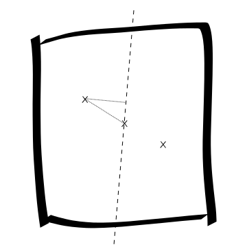

Problem Statement

Puzzle 1. Take a square of uniform density. Cut it into two pieces along a straight line through its center of mass. Each of the new pieces has a new center of mass. Let \(x\) be the distance from the new center of mass to the old one. Let \(y\) be the distance from the new center of mass to the newly-cut edge. What is the ratio of \(x\) to \(y\)? solution